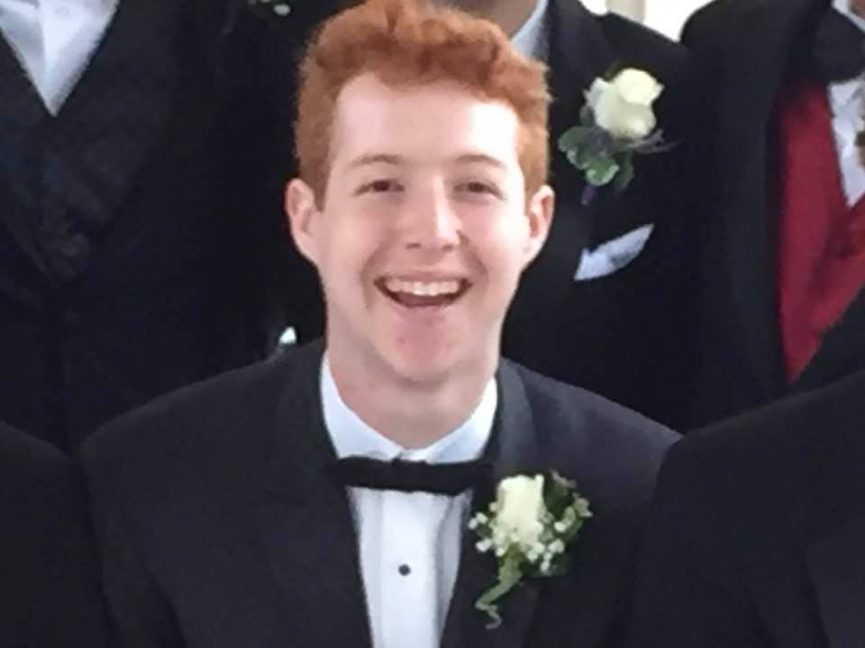

|  |
About MaceyMacey was born on April 30, 2000. Since then, he has called Olivette—a small suburb of St. Louis, MO—home. He has two younger siblings: a brother and a sister. He is currently a sophomore at Northwestern University. He studies Computer Science, with minors in General Music and Spanish. Macey is the co-president of ShireiNU A Cappella and a co-founder of Northwestern's Crossword Club. Macey has spent many years studying Spanish. Fueled by a desire to be able to communicate with more people, he has been a student of the language for over almost a decade. As with music, the study is rewarding, but a true test of one's ability is composition. As such, he has from time to time tried his hand at writing pieces in Spanish. Though both disciplines are ongoing processes, Macey is excited to continue working on them. Macey has always had a passion for music. He began playing the trombome in fourth grade and continued until he finished high school. During that time, he also learned the ukulele and guitar. Though he loved performing, he enjoyed composing music even more. At Northwestern, he combined his musical interests: composing and performing when he joined an a capplla group. There, he had the opportunity to arrange pieces for the group and sing at shows. |